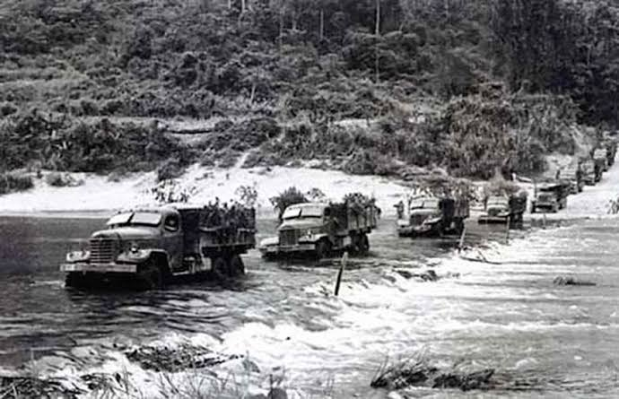

📖 GIỚI THIỆU

Sau Hiệp định Genève 1954, đất nước tạm thời bị chia cắt làm hai miền. Trước yêu cầu chi viện cho cách mạng miền Nam, tháng 1/1959, Hội nghị Trung ương Đảng lần thứ 15 xác định con đường đấu tranh vũ trang kết hợp đấu tranh chính trị để giành chính quyền.
Để hiện thực hóa quyết tâm đó, ngày 19/5/1959 — đúng ngày sinh Chủ tịch Hồ Chí Minh — Tổng Quân ủy Trung ương quyết định thành lập "Đoàn công tác quân sự đặc biệt" (Đoàn 559) với gần 500 cán bộ, chiến sĩ ban đầu, mang nhiệm vụ mở đường vận chuyển vũ khí, đưa đón bộ đội từ Bắc vào Nam.
Đầu tháng 6/1959, đội khảo sát bắt đầu mở tuyến từ Khe Hó (Vĩnh Linh, Quảng Bình), len lỏi qua núi rừng hiểm trở với phương châm "đi không dấu, nấu không khói, nói không tiếng". Từ một lối mòn gùi thồ thô sơ, con đường dần phát triển thành mạng lưới giao thông chiến lược xuyên suốt dãy Trường Sơn, trải dài qua 11 tỉnh miền Trung – Tây Nguyên và cả phần đất Lào, Campuchia.
Ở không nhà, đi không dấu, nấu không khói, nói không tiếng.
— Phương châm hoạt động bí mật của Bộ đội Trường Sơn📊 DẤU MỐC & CON SỐ
⚡ BỐI CẢNH RA ĐỜI
Đường Trường Sơn không phải một con đường có sẵn — đó là kỳ tích được kiến tạo từ ý chí "xẻ dọc Trường Sơn đi cứu nước", trong hoàn cảnh đất nước bị chia cắt và miền Nam cấp thiết cần chi viện.
📜 DIỄN BIẾN LỊCH SỬ
🏆 THÀNH TỰU & DẤU ẤN
Đường Trường Sơn để lại những dấu ấn phi thường trong lịch sử quân sự Việt Nam — một kỳ tích được tạo nên bằng ý chí, mồ hôi và cả xương máu của nhiều thế hệ bộ đội, thanh niên xung phong.
Xẻ dọc Trường Sơn đi cứu nước, mà lòng phơi phới dậy tương lai — con đường ấy đã trở thành biểu tượng cho ý chí thống nhất non sông của cả một dân tộc.
— Nhận định của các nhà sử học Việt Nam hiện đại💡 Ý NGHĨA LỊCH SỬ
Đường Trường Sơn là minh chứng sống động cho ý chí "xẻ dọc Trường Sơn đi cứu nước" của cả dân tộc — biến một dãy núi hiểm trở thành huyết mạch chiến lược nối liền hậu phương lớn miền Bắc với tiền tuyến lớn miền Nam suốt 16 năm ròng rã.
Nhờ nguồn chi viện không ngừng từ con đường này, quân và dân miền Nam đã có đủ sức người, sức của để tiến hành các chiến dịch lớn, góp phần quyết định làm nên Đại thắng mùa Xuân 1975, thống nhất đất nước.
Không có con đường Trường Sơn, sẽ không có ngày toàn thắng 30/4/1975 — đó là con đường của ý chí, của lòng quả cảm và của khát vọng thống nhất non sông.
— Nhận định lịch sử Việt Nam